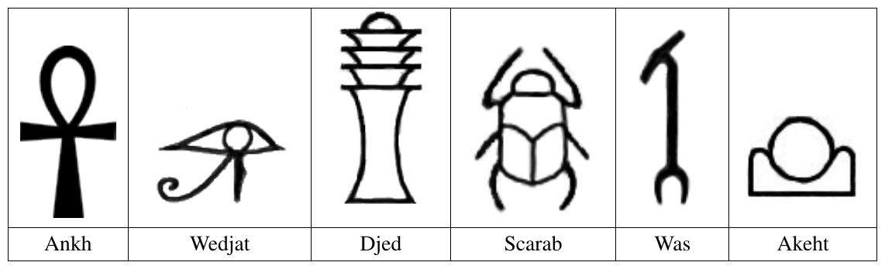
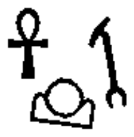
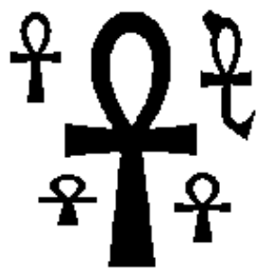

ICPC 2011 World Finals · Problem C
In order to understand early civilizations, archaeologists often study texts written in ancient languages. One such language, used in Egypt more than 3000 years ago, is based on characters called hieroglyphs. Figure C.1 shows six hieroglyphs and their names. In this problem, you will write a program to recognize these six characters.

The input consists of several test cases, each of which describes an image containing one or more hieroglyphs chosen from among those shown in Figure C.1. The image is given in the form of a series of horizontal scan lines consisting of black pixels (represented by 1) and white pixels (represented by 0). In the input data, each scan line is encoded in hexadecimal notation. For example, the sequence of eight pixels 10011100 (one black pixel, followed by two white pixels, and so on) would be represented in hexadecimal notation as 9c. Only digits and lowercase letters a through f are used in the hexadecimal encoding. The first line of each test case contains two integers, H and W. H (0 < H ≤ 200) is the number of scan lines in the image. W (0 < W ≤ 50) is the number of hexadecimal characters in each line. The next H lines contain the hexadecimal characters of the image, working from top to bottom. Input images conform to the following rules:
The last test case is followed by a line containing two zeros.
For each test case, display its case number followed by a string containing one character for each hieroglyph recognized in the image, using the following code:
Ankh: A
Wedjat: J
Djed: D
Scarab: S
Was: W
Akhet: K
In each output string, print the codes in alphabetic order. Follow the format of the sample output.
The sample input contains descriptions of test cases shown in Figures C.2 and C.3. Due to space constraints not all of the sample input can be shown on this page.


100 25 0000000000000000000000000 0000000000000000000000000 ...(50 lines omitted)... 00001fe0000000000007c0000 00003fe0000000000007c0000 ...(44 lines omitted)... 0000000000000000000000000 0000000000000000000000000 150 38 00000000000000000000000000000000000000 00000000000000000000000000000000000000 ...(75 lines omitted)... 0000000003fffffffffffffffff00000000000 0000000003fffffffffffffffff00000000000 ...(69 lines omitted)... 00000000000000000000000000000000000000 00000000000000000000000000000000000000 0 0
Case 1: AKW Case 2: AAAAA
1 Two figures are topologically equivalent if each can be transformed to the other by stretching without tearing.